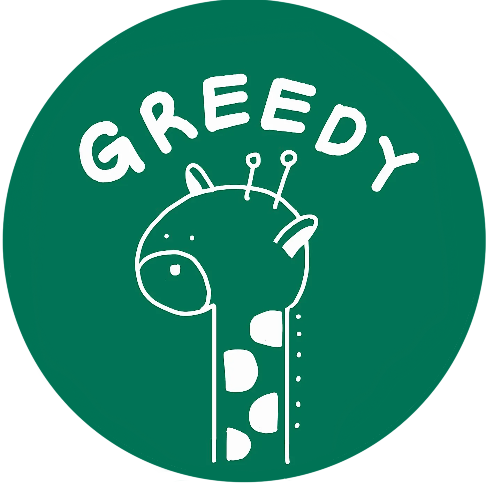

세종대학교 개발 동아리 · 4기 모집 예정
함께 만들고,
함께 만들고,
기록으로 성장한다.
그리디는 세종대학교의 개발 스터디·프로젝트 동아리입니다. 매주 미션과 리뷰로 함께 성장하고, 그 발자취가 각자의 이력으로 남습니다.

- 누적 멤버
- ~50
- 진행 기수
- 4기
- 트랙
- FE · BE
- 팀 프로젝트
- 12+
그리디는 이렇게 굴러갑니다
모집 → OT → 스터디(미션·리뷰 티키타카) → 팀 프로젝트(데모데이) → 회고
최신 기술블로그
멤버와 이전 기수가 남긴 기록 — 공개